Если рассматривать эту сеть как часть класса B (исходный префикс
/16), то число возможных подсетей с префиксом /24: - Количество
подсетей: 2^(24–16) = 256
Разбиение на три
подсети (126, 62, 62 узла)
Требуемое количество узлов:
Подсеть 1: 126 узлов → нужно минимум 7 бит для хостов
2^7 – 2 = 126 → префикс /25
Размещаем подсети последовательно внутри 172.16.20.0/24 (от меньшего
адреса к большему).
Подсеть 1 (126 узлов)
Адрес сети: 172.16.20.0/25
Маска: 255.255.255.128
Диапазон узлов: 172.16.20.1 – 172.16.20.126
Broadcast: 172.16.20.127
Число адресов узлов: 126
Подсеть 2 (62 узла)
Оставшаяся часть исходной сети — 172.16.20.128/25. Делим её на две
/26.
Первая /26:
Адрес сети: 172.16.20.128/26
Маска: 255.255.255.192
Диапазон узлов: 172.16.20.129 – 172.16.20.190
Broadcast: 172.16.20.191
Число адресов узлов: 62
Подсеть 3 (62 узла)
Вторая /26 из того же диапазона:
Адрес сети: 172.16.20.192/26
Маска: 255.255.255.192
Диапазон узлов: 172.16.20.193 – 172.16.20.254
Broadcast: 172.16.20.255
Число адресов узлов: 62
Сеть 10.10.1.64/26
Характеристики
исходной сети 10.10.1.64/26
Префикс: /26
Маска: 255.255.255.192
Адрес сети: 10.10.1.64
Broadcast-адрес: 10.10.1.127
Число адресов в сети: 2^(32–26) = 2^6 = 64
Число адресов узлов: 64 – 2 = 62
Диапазон адресов узлов: 10.10.1.65 –
10.10.1.126
Если считать, что базовая сеть — 10.10.1.0/24, то с префиксом /26 это
разбиение на: - Количество возможных подсетей: 2^(26–24) = 4
подсети
(10.10.1.0/26, 10.10.1.64/26, 10.10.1.128/26, 10.10.1.192/26)
Выделение
подсети на 30 узлов внутри 10.10.1.64/26
Нужно 30 узлов → 2^5 – 2 = 30 → префикс /27.
Сеть 10.10.1.64/26 (64–127) делится на две /27:
10.10.1.64/27 (64–95)
10.10.1.96/27 (96–127)
Выберем первую, с минимальным адресом.
Искомая подсеть (на 30 узлов):
Адрес сети: 10.10.1.64/27
Маска: 255.255.255.224
Число адресов в подсети: 2^(32–27) = 32
Число адресов узлов: 32 – 2 = 30
Диапазон узлов: 10.10.1.65 – 10.10.1.94
Broadcast: 10.10.1.95
Сеть 10.10.1.0/26
Характеристики сети
10.10.1.0/26
Префикс: /26
Маска: 255.255.255.192
Адрес сети: 10.10.1.0
Broadcast-адрес: 10.10.1.63
Число адресов в сети: 2^(32–26) = 64
Число адресов узлов: 64 – 2 = 62
Диапазон адресов узлов: 10.10.1.1 – 10.10.1.62
В пределах 10.10.1.0/24 при маске /26 также возможны 4
подсети (0/26, 64/26, 128/26, 192/26).
Выделение подсети на 14
узлов
Нужно 14 узлов → 2^4 – 2 = 14 → префикс /28.
Сеть 10.10.1.0/26 (диапазон 0–63) делится на четыре /28:
10.10.1.0/28 (0–15)
10.10.1.16/28 (16–31)
10.10.1.32/28 (32–47)
10.10.1.48/28 (48–63)
Выберем первую.
Искомая подсеть (на 14 узлов):
Адрес сети: 10.10.1.0/28
Маска: 255.255.255.240
Число адресов в подсети: 16
Число адресов узлов: 16 – 2 = 14
Диапазон узлов: 10.10.1.1 – 10.10.1.14
Broadcast: 10.10.1.15
Разбиение IPv6-сети на подсети
Сеть 2001:db8:c0de::/48
Характеристика исходной сети
Адрес в полной форме:
2001:0db8:c0de:0000:0000:0000:0000:0000
Параметры сети:
Префикс: /48
Маска (в двоичном виде): 48 единиц и 80 нулей
Часть сети: первые три блокa (hextet) —
2001:0db8:c0de
В IPv6 нет broadcast-адреса, вместо него используется многоадресная
рассылка.
Однако «краевыми» адресами диапазона считаются показанные выше
минимальный и максимальный адрес.
Разбиение
на 2 подсети с использованием идентификатора подсети
Считаем, что для идентификатора подсети используются биты с 49-го по
64-й (четвёртый hextet).
Добавляем один бит к префиксу: /49. Это даёт две подсети:
Подсеть 1:
Адрес сети: 2001:db8:c0de:0000::/49
Диапазон адресов:
от 2001:db8:c0de:0:0:0:0:0
до 2001:db8:c0de:7fff:ffff:ffff:ffff:ffff
Подсеть 2:
Адрес сети: 2001:db8:c0de:8000::/49
Диапазон адресов:
от 2001:db8:c0de:8000:0:0:0:0
до 2001:db8:c0de:ffff:ffff:ffff:ffff:ffff
Интерпретация: меняется старший бит четвёртого блока (0 → первая
подсеть, 8 → вторая подсеть), то есть мы используем именно поле
идентификатора подсети.
Разбиение
на 2 подсети с использованием идентификатора интерфейса
Теперь внутри одной из /64-подсетей сделаем разбиение по битам
идентификатора интерфейса.
Сначала выберем одну /64 внутри исходного /48, например:
2001:db8:c0de:1::/64
В этой сети биты 65–128 образуют идентификатор интерфейса.
Добавим один бит к префиксу: получим две /65-подсети, отличающиеся
старшим битом интерфейсного идентификатора:
Подсеть A (старший бит интерфейсного ID = 0):
Адрес сети: 2001:db8:c0de:1:0000:0000:0000:0000/65
Краевые адреса:
минимальный: 2001:db8:c0de:1:0:0:0:0
максимальный: 2001:db8:c0de:1:7fff:ffff:ffff:ffff
Подсеть B (старший бит интерфейсного ID = 1):
Адрес сети: 2001:db8:c0de:1:8000:0000:0000:0000/65
Краевые адреса:
минимальный: 2001:db8:c0de:1:8000:0:0:0
максимальный: 2001:db8:c0de:1:ffff:ffff:ffff:ffff
Интерпретация: префикс /64 остаётся одним и тем же с точки зрения
глобального маршрутизирования (одно значение идентификатора подсети
…:1:), но мы «одалживаем» один бит из зоны интерфейсного ID
и превращаем его в дополнительный бит префикса. Так получаются две
меньшие подсети /65 внутри одной «классической» /64-подсети.
Сеть 2a02:6b8::/64
Характеристика исходной
сети
Адрес в полной форме:
2a02:06b8:0000:0000:0000:0000:0000:0000
Параметры сети:
Префикс: /64
Маска: 64 единицы и 64 нуля
Часть сети: первые четыре блока —
2a02:06b8:0000:0000
Диапазон адресов внутри префикса:
минимальный: 2a02:6b8:0:0:0:0:0:0
максимальный: 2a02:6b8:0:0:ffff:ffff:ffff:ffff
Это «типичный» размер IPv6-подсети для локальной сети: /64.
Разбиение
на 2 подсети с использованием идентификатора подсети
Формально, при классическом планировании IPv6 биты 65–128 считаются
идентификатором интерфейса.
Но мы можем «одолжить» один из этих битов и интерпретировать его как
дополнительный бит идентификатора подсети, т.е. увеличить длину префикса
до /65.
Получим две подсети /65:
Подсеть 1:
Адрес сети: 2a02:6b8:0:0:0000:0000:0000:0000/65 (часто записывают
просто 2a02:6b8::/65)
Диапазон адресов:
от 2a02:6b8:0:0:0:0:0:0
до 2a02:6b8:0:0:7fff:ffff:ffff:ffff
Подсеть 2:
Адрес сети: 2a02:6b8:0:0:8000:0000:0000:0000/65
Диапазон адресов:
от 2a02:6b8:0:0:8000:0:0:0
до 2a02:6b8:0:0:ffff:ffff:ffff:ffff
Интерпретация: мы «разрезали» /64 на две части, использовав старший
бит интерфейсного ID как дополнительный бит сети — то есть превратили
его в часть идентификатора подсети.
Разбиение
на 2 подсети с использованием идентификатора интерфейса
Во втором варианте сам префикс /64 не изменяется: с точки зрения
маршрутизаторов это по-прежнему одна сеть 2a02:6b8::/64.
Однако мы логически делим пространство интерфейсных идентификаторов,
например, по старшему байту или старшему слову.
Пример:
Подсеть A (условно «подсеть» по интерфейсному ID):
используем интерфейсные идентификаторы в диапазоне
0000:0000:0000:0000 – 7fff:ffff:ffff:ffff
Подсеть B:
используем интерфейсные идентификаторы в диапазоне
8000:0000:0000:0000 – ffff:ffff:ffff:ffff
Если закрепить за каждой такой группой, например, отдельный VLAN или
отдельный пул адресов на DHCPv6-сервере, то на уровне хостов получится
два логических сегмента, хотя маршрутизатор видит один и тот же префикс
/64.
Выполнение
Настройка
двойного стека адресации IPv4 и IPv6 в локальной сети
В рабочем пространстве GNS3 была развёрнута сеть согласно заданной
топологии.
После размещения оборудования каждому устройству были назначены имена по
требуемому формату.
Итоговая схема проекта представлена ниже:
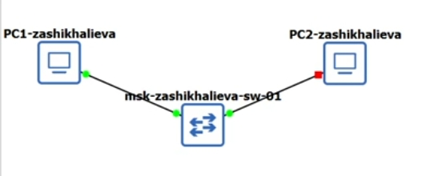
Топология лабораторного
стенда
На ПК1 была выполнена настройка адреса из подсети
172.16.20.0/25.
Команда show ip подтверждает корректное назначение
параметров, включая шлюз 172.16.20.1.
Также выведена конфигурация IPv6.
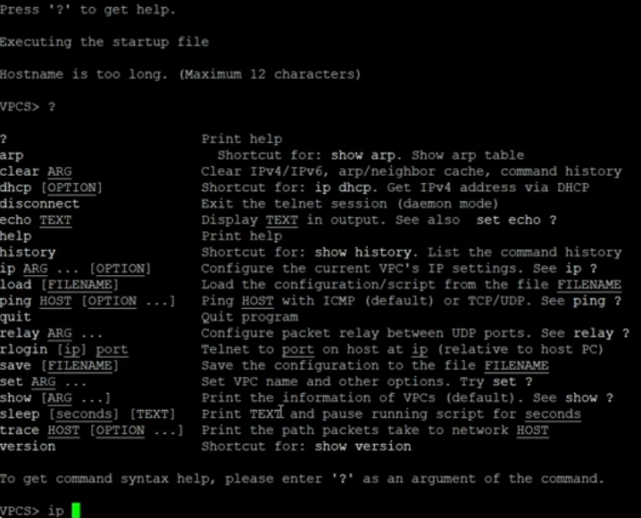
Конфигурация PC1
ПК2 настроен в подсети 172.16.20.128/25 с адресом
172.16.20.138.
Вывод IPv4 и IPv6 подтверждает корректность параметров.
Конфигурация PC2
Сервер получил адрес в сети 64.100.1.0/24.
Вывод show ip демонстрирует корректную установку адреса и
шлюза.
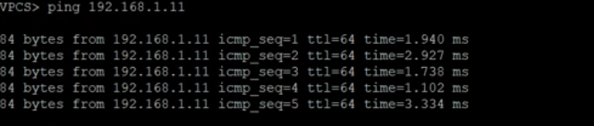
Конфигурация сервера
На маршрутизаторе FRR выполнено назначение имени хоста и настройка
трёх интерфейсов:
eth0: 172.16.20.1/25
eth1: 172.16.20.129/25
eth2: 64.100.1.1/24
Все интерфейсы были активированы.
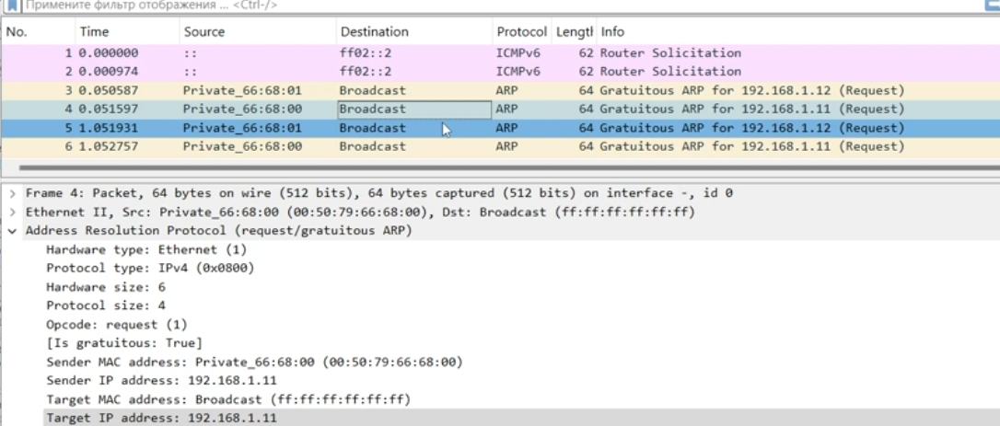
Процесс настройки интерфейсов
FRR
Конфигурация маршрутизатора отображается через
show running-config.
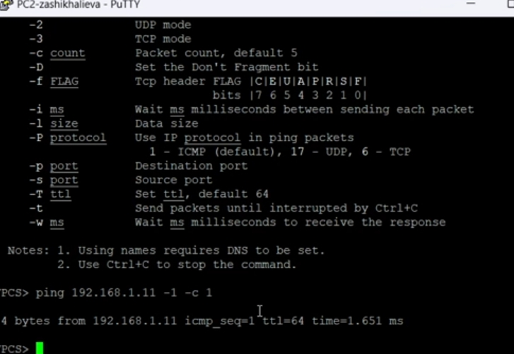
Вывод running-config
Команда show interface brief показывает состояние и
назначенные адреса.
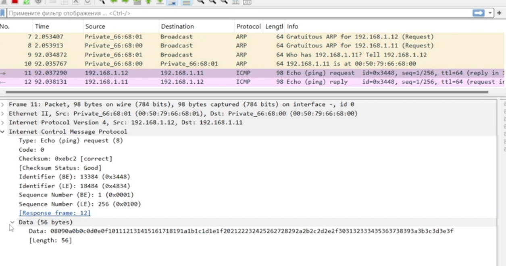
Информация об интерфейсах
FRR
PC1 успешно отправляет:
ICMP-эхо-запросы на PC2 (172.16.20.138),
ICMP-эхо-запросы на сервер (64.100.1.10).
Трассировка маршрута показывает прохождение трафика через FRR.
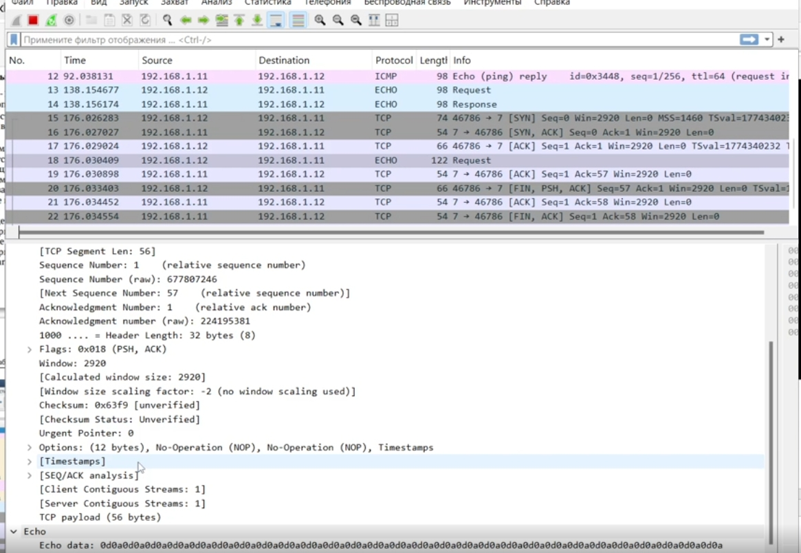
Ping и trace с PC1
На линии между сервером и коммутатором был включён захват
трафика.
Фиксируются ARP-запросы, ICMP-эхо-запросы и ответы.
На фрагменте виден запрос «Who has 64.100.1.10? Tell 64.100.1.1».
ARP-трафик
Пример успешного ответа сервера на эхо-запрос.
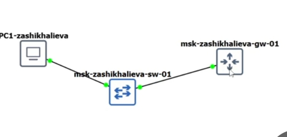
ICMP-ответ сервера
В соответствии с таблицей 6.6 на узлы подсети IPv6 были назначены
глобальные адреса.
Узлу PC3 назначен адрес из подсети
2001:db8:c0de:12::/64.
Команды show ip и show ipv6 отображают
отсутствие IPv4-конфигурации и наличие корректного глобального
IPv6-адреса.
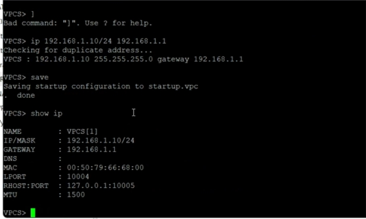
Конфигурация PC3
ПК4 получил IPv6-адрес из подсети
2001:db8:c0de:13::/64.
Вывод показывает только IPv6-конфигурацию, аналогично PC3.
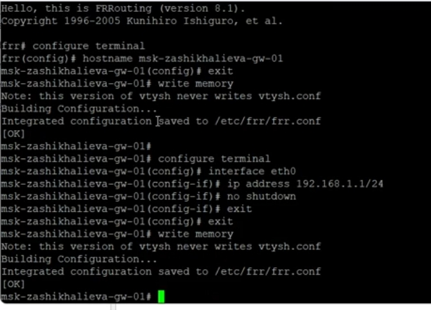
Конфигурация PC4
Сервер имеет два стека адресации:
IPv4 — ранее настроена в подсети 64.100.1.0/24,
IPv6 — адрес из подсети 2001:db8:c0de:11::/64.
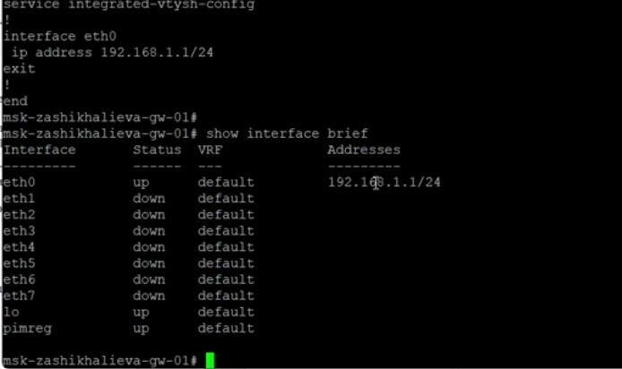
IPv6-конфигурация сервера
После установки VyOS и изменения имени хоста выполнялась настройка
трёх интерфейсов маршрутизатора.
Каждый интерфейс получил адрес и был включён в RA-сервис для
автоматической раздачи префиксов.
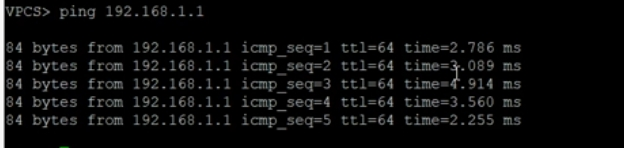
Назначение IPv6-адресов на
VyOS
После применения конфигурации был выполнен просмотр интерфейсов.
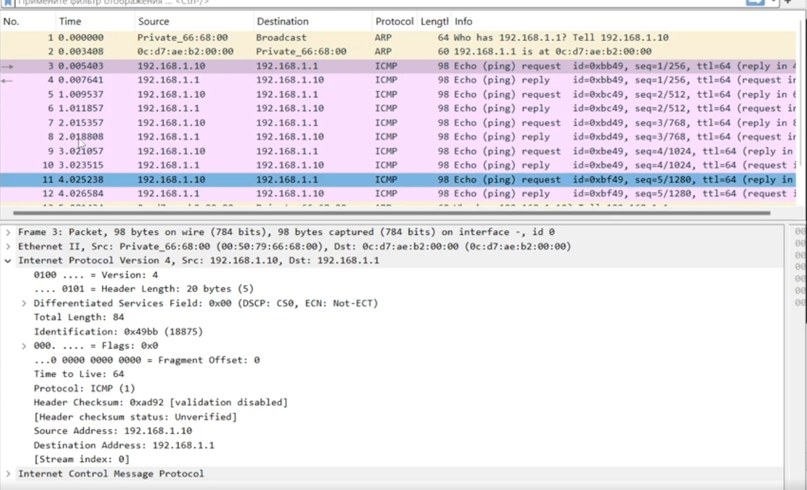
Вывод show interfaces на
VyOS
PC4 успешно отправляет ICMPv6-эхо-запросы к узлам:
PC3: 2001:db8:c0de:12::a
Server: 2001:db8:c0de:11::a
При этом доступ к IPv4-адресам недоступен — что соответствует
требованиям разделения подсетей.
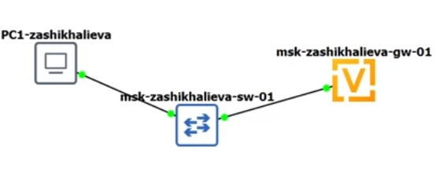
Ping и trace с PC4
Сервер успешно пингует узлы IPv6-сегмента и узлы IPv4-подсети.
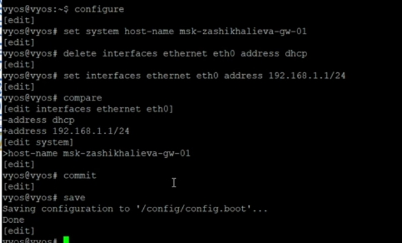
Ping с сервера IPv6 и IPv4
На захваченном трафике видно:
ICMPv6 Echo Request,
ICMPv6 Echo Reply,
Neighbor Solicitation/Advertisement.
Это подтверждает корректное функционирование IPv6 и SLAAC.
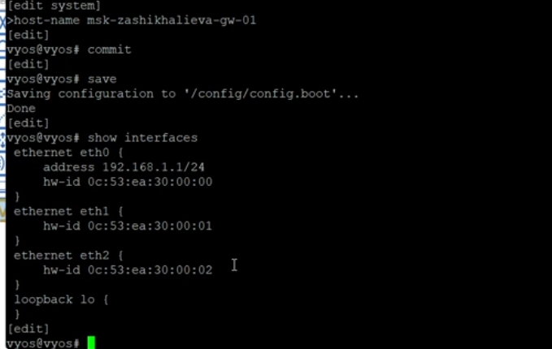
Фрагмент ICMPv6-трафика в
Wireshark
Задание для
самостоятельного выполнения
Для топологии заданы две локальные подсети — каждая содержит как
IPv4-, так и IPv6-адресное пространство.
Для интерфейсов маршрутизатора используются минимальные
доступные адреса.
Устройство
Интерфейс
IPv4-адрес
Маска
IPv6-адрес
Префикс
msk-trseidaliev-gw-01
eth0
10.10.1.97
/27
2001:db8:1:1::1
/64
msk-trseidaliev-gw-01
eth1
10.10.1.17
/28
2001:db8:1:4::1
/64
PC1
vpcs
10.10.1.100
/27
2001:db8:1:1::a
/64
PC2
vpcs
10.10.1.20
/28
2001:db8:1:4::a
/64
PC1 Настроенные IPv4 и IPv6 отображаются в выводе:
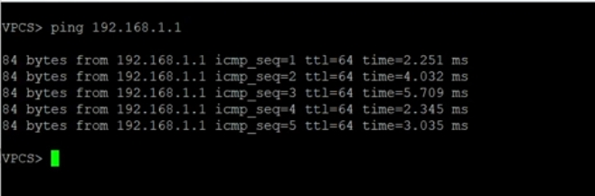
PC1 вывод show ip
Для PC2 настроены адреса второй подсети:
PC2 вывод show ip
Используемая схема сети:
Топология сети
Маршрутизатор установлен и переведён в режим конфигурирования.
Для каждого интерфейса заданы IPv4 и IPv6-адреса, соответствующие
минимальным адресам подсети.
Настройка VyOS интерфейсов
PC1 успешно пингует:
PC2 по IPv4: 10.10.1.20
PC2 по IPv6: 2001:db8:1:4::a
Также выполнена трассировка маршрута.
Ping и trace с PC1
Проверяются маршруты и ICMPv6-ответы.
IPv6 ICMP проверка
Связность между подсетями обеспечивается только через
маршрутизатор.
Проверка IPv4 с PC1
Заключение
В ходе выполнения работы:
выполнено детальное разбиение IPv4- и IPv6-адресных пространств на
подсети с расчётом масок, префиксов, диапазонов адресов и краевых
значений;
разработаны таблицы адресации для всех вариантов разбиения, включая
выбор минимальных адресов для интерфейсов маршрутизаторов;
настроены IPv4- и IPv6-адреса на конечных узлах и маршрутизаторах
VyOS в соответствии с заданными топологиями;
проверена работоспособность сетей с помощью утилит ping
и trace, подтверждена корректность маршрутизации и изоляции
подсетей;
выполнен анализ трафика ICMPv4 и ICMPv6 в Wireshark, подтверждающий
правильность функционирования адресного стека и соседских
взаимодействий;
обеспечена корректная работа двойного стека IPv4/IPv6, включая
взаимодействие сервера с обеими подсетями и изоляцию сетей разного
протокола.
Работа позволила закрепить навыки разбиения адресных пространств,
настройки маршрутизаторов и анализа сетевого трафика в среде
виртуального моделирования.